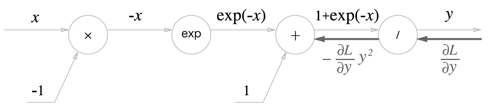
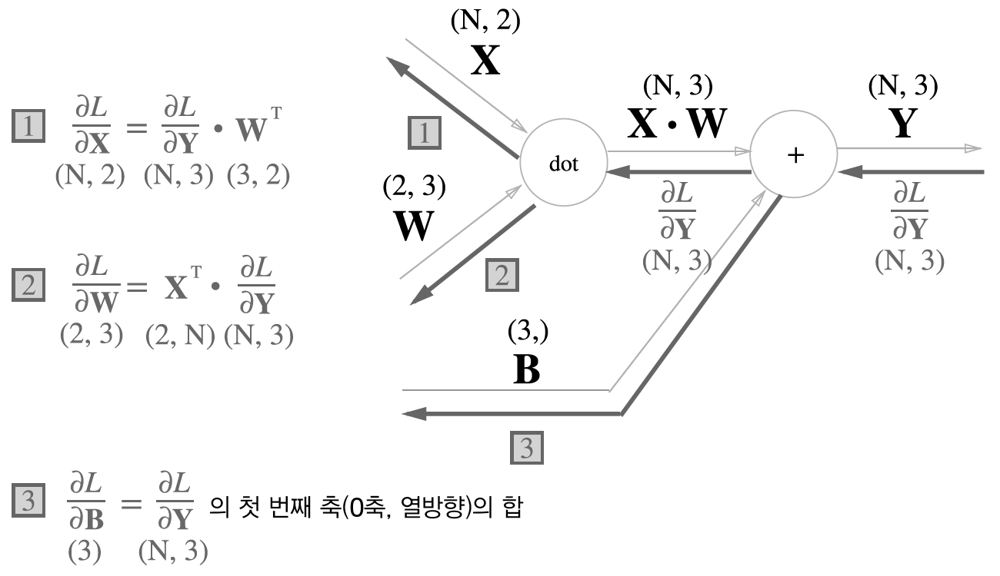
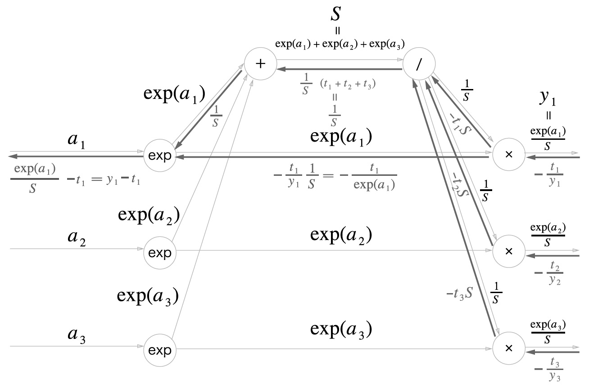

지금까지 순전파를 거쳐 산출한 손실함수값을 수치미분을 이용하여 기울기만큼 매개변수를 업데이트 하는 학습과정을 살펴보았습니다. 구현은 단순할 수 있으나, 계산속도는 그리 빠르지 않습니다. 여기서 등장하는 것이 오차역전파(backpropagation)입니다.
오차역전파를 이해하기 위하여는 우리는 2가지를 먼저 이해할 필요가 있다고 생각합니다. 하나는 미분에서의 Chain-rule이고 다른 하나는 피보나치 수열에 기반한 Dynamic Programming입니다,
8.1 Pre-requisite: Chain-rule and Dynamic Programming
오차역전파는 기본적으로 손실함수 값에서 입력값까지의 매개변수를 역으로 조정하는 과정으로 순방향과 반대방향으로 국소적인 미분값을 곱하며 가중치를 조정하는 절차로 이해할 수 있습니다.
8.1.1 Chain-rule
반대방향으로 국소적인 미분값을 곱한다는 것은 어떠한 의미를 갖고 있을까요? 그리고 이러한 연산의 기반이 되는 개념이 무엇일까요? 이물음에 대한 답변이 바로 연쇄법칙입니다. 연쇄법칙에 관한 자세한 설명은 아래 3Blue1Brown1 영상을 참고하기 바랍니다.
1 3Blue1Brown은 많은 수학적인 문제를 도식화하여 아주 직관적으로 설명하고 있어 매우 유용합니다.
8.1.2 Dynamic Programming
연쇄법칙을 정확히 이해하였다면 지속적으로 미분값이 재귀적으로 사용됨을 확인할 수 있습니다. 그러나 이미 계산된 미분값을 따로 저장하였다가 불러오기만 한다면 연산이 얼마나 쉬워질까요? 쉬워진다기보다 간단해지고 컴퓨터의 연산의 수를 줄일 수 있지 않을까요?
바로 이러한 배경에서 연쇄법칙을 빠르게 수행하기 위하여 고려되는 방법이 동적계획법 입니다. 이는 피보나치 수열의 계산에 있어서 재귀적으로 반복계산되는 노드를 따로 저장하여 그 값을 호출하여 사용하도록 하므로써 연산의 수를 줄여 알고리즘의 성능을 개선해줄수 있을 것입니다.
동적계획법에 대한 자세한 설명은 아래 영상을 참고하시기 바랍니다.
8.2 Backpropagation
역전파 과정을 연쇄법칙을 수식 및 그래프를 활용하면 보다 직관적이고 쉽게 이해할 수 있습니다. 우선 합성함수2Equation 8.1 의 식을 미분을 실행하며 예로 살펴보겠습니다,
2 합성함수의 미분은 함성함수를 구성하는 각 함수의 미분의 곱으로 표현가능
\begin{align}
z &= t^2 \\
t &= x+y
\end{align}
\tag{8.1}
x에 대한 z의 미분인 \frac{\partial{z}}{\partial{x}}은 \frac{\partial{z}}{\partial{t}}과 \frac{\partial{t}}{\partial{x}}의 곱으로 나타낼 수 있습니다. 그리고 \partial{t}를 서로 지울 수 있습니다.
상류에서 산출한 편미분 값(\frac{\partial{L}}{\partial{z}})을 x간선의 경우 \frac{\partial{L}}{\partial{z}}\frac{\partial{z}}{\partial{x}}의 꼴로 역전파가 이루어 지고, y간선의 경우 \frac{\partial{L}}{\partial{z}}\frac{\partial{z}}{\partial{y}}의 꼴로 역전파가 이루어 집니다.
Figure 8.6 는 덧셈의 역전파 이므로 \frac{\partial{L}}{\partial{z}}\frac{\partial{z}}{\partial{x}}=\frac{\partial{L}}{\partial{z}}\cdot1과 \frac{\partial{L}}{\partial{z}}\frac{\partial{z}}{\partial{y}}=\frac{\partial{L}}{\partial{z}}\cdot1로 변형됨으로 입력된 값 그대로 다음 노드에 전달되게 됩니다.
Figure 8.3: Examples: Backpropagation of Addition Nodes
8.2.2 Backpropagation of Multiplication Nodes
다음으로 z=xy를 갖고 곱셈노드에 대한 역전파를 살펴보겠습니다. 먼저 이 식에 대한 미분을 해석적으로 구하면 \frac{\partial{z}}{\partial{x}} = y와 \frac{\partial{z}}{\partial{y}} = x가 됩니다.
상류에서 산출한 편미분 값(\frac{\partial{L}}{\partial{z}})을 x간선의 경우 \frac{\partial{L}}{\partial{z}}\frac{\partial{z}}{\partial{x}}=\frac{\partial{L}}{\partial{z}}\frac{\partial{z}}{\partial{x}}=\frac{\partial{L}}{\partial{z}}\cdot y의 꼴로 역전파가 이루어 지고, y간선의 경우 \frac{\partial{L}}{\partial{z}}\frac{\partial{z}}{\partial{y}}=\frac{\partial{L}}{\partial{z}}\frac{\partial{z}}{\partial{y}}=\frac{\partial{L}}{\partial{z}}\cdot x의 꼴로 역전파가 이루어 집니다.
Figure 8.4 는 곱셈의 역전파는 서로 바꾼값을 곱하여 하류로 흘려 보내게 됨을 확인할 수 있습니다.
Figure 8.4: Examples: Multiplication of Addition Nodes
Sigmoid6의 경우는 곱하기, 더하기 등의 노드가 결합되는 형태로 ReLU에 비하여 조금 복잡할 수 있으나 아래의 그래프(Figure 8.6 )를 참고하여 단계별로 나누어 역전파 과정을 설명하도록 하겠습니다.
6y=\frac{1}{1+exp(-x)}

Forward
Backward
Figure 8.6: Backpropagation process of Sigmoid
계산 그래프(Figure 8.6 ) ’/’노드의 역전파를 설명을 위해 순전화 과정에서 약간의 트릭으로 역수의 곱하기 노드로 변형할 수 있습니다.. 이는 1+epx(-x)를 x로 두고 y=\frac{1}{x}로 순전파를 진행하여 y를 출력하고, 역전파는 곱하기이므로 x에 대한 y의 미분값7을 입력값(\frac{\partial{L}}{\partial{y}})과 곱하여 하류로 흘려보내면 \times 노드의 역전파로 풀이할 수 있습니다.
마지막으로 \times으 노드이다. 상류에서 입력되는 값과 해당노드의 미분값을 곱하여 하류로 흘려 보내는 방식으로 역전파를 수행하며, 곱하기 노드의 순전파시 산출이 -x이므로 역전파에 사용할 미분값은 -1이므로 입력된 값의 부호만을 변경해주면 됩니다.
Sigmoid 노드의 역전파를 단순화 하면 입력값은 \frac{\partial{L}}{\partial{y}}이 되고, 출력값은 \frac{\partial{L}}{\partial{y}}y^2exp(-x)이 되게 됩니다. 이 식을 다음(Equation 8.4)과 같이 변형해서 Figure 8.7 과 같이 최종 단순화 할 수 있습니다.
ANN의 순전파에서 입력값(\textbf{X})과 가중치(\textbf{W})의 Weighted sum에 편향(\textbf{B})을 합산하여 활성화 함수를 통해 출력값을 다음 계층에 전달하게 됩니다. 이 과정에서 중요한 것은 특정 계층 또는 노드의 계산과정에서의 형상 또는 차원을 일치시켜야 한다는 점입니다.
Figure 8.8: Forward Propagation of Affine
Figure 8.8 는 행렬을 기준으로 한 순전파 과정입니다. 이는 2개의 입력노드를 \textbf{X}, 3개의 출력노드 \textbf{Y}를 갖는 신경망8 (Figure 8.9 )을 벡터폼으로 표현한 것입니다.
Equation 8.4 의 식을 이용하여 역전파 과정을 그리면 Figure 8.10 과 같이 그 과정을 표현할 수 있습니다. 주의할 것은 \textbf{X}(\textbf{W})의 형상과 역전파로 산출되는 \frac{\partial{L}}{\partial{\textbf{X}}}(\frac{\partial{L}}{\partial{\textbf{W}}})의 형상이 동일하다는 것입니다.
Figure 8.10: Backward Propagation of Affine
이러한 어파인 과정을 배치용 계층으로 구성할 때는 \textbf{X}의 형상만을 변형해주면 손쉽게 구현할 수 있습니다.

Figure 8.11: Backward Propagation of Affine for Mini-batch
지금까지 설명한 Affine을 코드로 구현하겠습니다. 앞선 예들과 같이 순전파와 역전파 과정을 모두 포함합니다.,
다음으로 크로스 엔트로피 오차 계층의 결과(-\frac{t_1}{y_1}, -\frac{t_2}{y_2}, -\frac{t_3}{y_3})를 사용하여 소프트맥스의 역전파 과정(Figure 8.16 )을 살펴보겠습니다. 아래 과정은 크로스 엔트로피 분모쪽의 역전파를 먼저 수행하고 분자쪽의 역잔파를 다음에 수행하며 설명하겠습니다.

Figure 8.16: Backward process of Softmax
1단계: 앞 계층인 크로스 엔트로피 오차 계층의 결과 값의 연전파 값이 역전파의 초깃값(-\frac{t_1}{y_1})에 해당합니다.
2단계: 상류에서 입력받은 값과 \times 노드 중 분모쪽 역전파를 수행해야 하므로 순전파시 분자쪽 입력값(exp(a_1))을 곱하여 -t_1S 하류로 흘려보냅니다. 11
3단계:\div(/) 노드의 순전파시에 다음 노드로 나누어 흘려 보냈으므로 역전파시에는 나누어진 값(-t_1S, -t_2S, -t_3S)들을 먼저 합하여야 합니다. 합산된 값(-t_1S+-t_2S+-t_3S = -S(t_1+t_2+t_3))에 순전파시 흘려보낸 값(\frac{1}{S} = S^{-1})의 미분값(-S^{-2}=-\frac{1}{S^2})을 곱하여 \frac{1}{S}(t_1+t_2+t_3)12를 하류로 흘려보냅니다.
4단계: 분모쪽 \div(/) 노드를 통해 흘러들어온 \frac{1}{S}는 + 노드를 통하여 그대로 \frac{1}{S}을 하류로 흘려보냅니다.
5단계: 이제 크로스엔트로피의 분자쪽 방향의 역전파를 살펴보겠습니다. \times 노드 중 순전파시 분모쪽 입력값(\frac{1}{S})를 상류에서 역전파를 위해 입력받은 값(-\frac{t_1}{y_1})과 곱하여 -\frac{t_1}{y_1}\frac{1}{S}13를 하류로 흘려보냅니다.
6단계:EXP노드는 앞서 부모쪽 \div(/) 노드처럼 순전파시 exp(a_1) 을 다음노드로 나누어 흘려 보냈으므로 역전파시에는 나누어진 값(부모쪽:\frac{1}{S}, 분자쪽:-\frac{t_1}{exp(a_1)})들을 먼저 합하여야 합니다. 이렇게 합한 값에 순전파시 흘려보낸 값(y=\exp(a_1))의 미분값(\frac{\partial{y}}{\partial{x}}=\exp(x))을 곱하여 최종적으로 \frac{\exp(a_1)}{S}-t_114 소프트맥스 계층의 역전파 값을 산출합니다.
12 주의할 것은 (t_1, t_2, t_3)은 원-핫 벡터로 이들의 합은 항상 1이 됩니다. 따라서, 식을 간단히 하여 하류로 흘려보내는 값은 \frac{1}{S}로 단순화 시킬수 있습니다.
13 이식에서 y_1=\frac{exp(a_1)}{S}를 활용하여 -\frac{t_1}{exp(a_1)}로 단순화 킬수 있습니다.